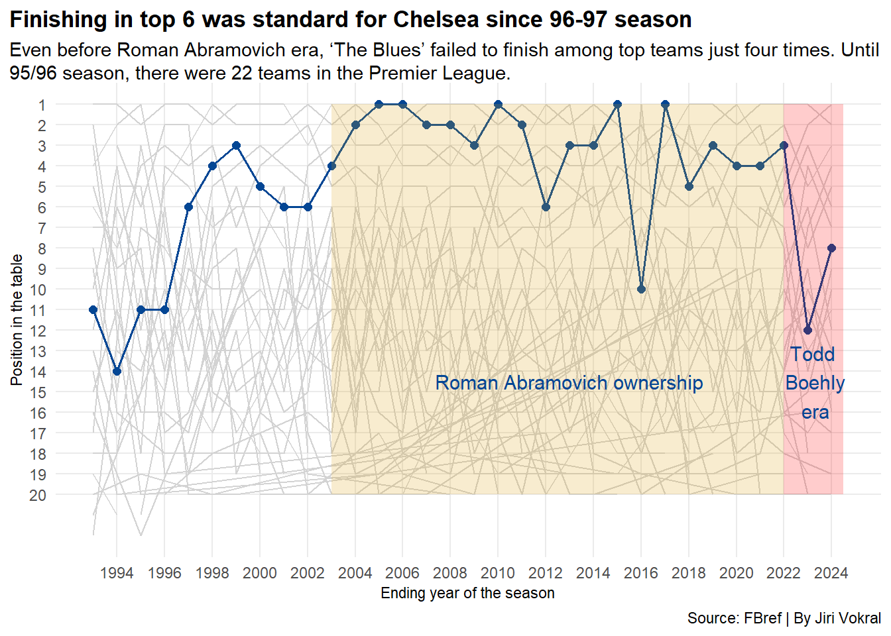
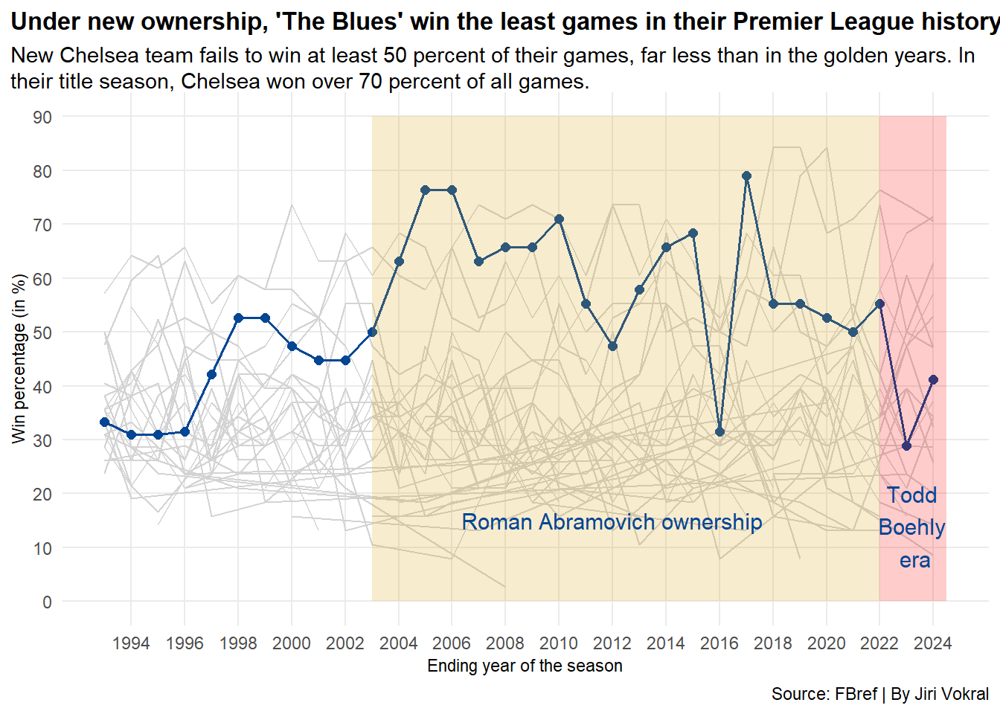
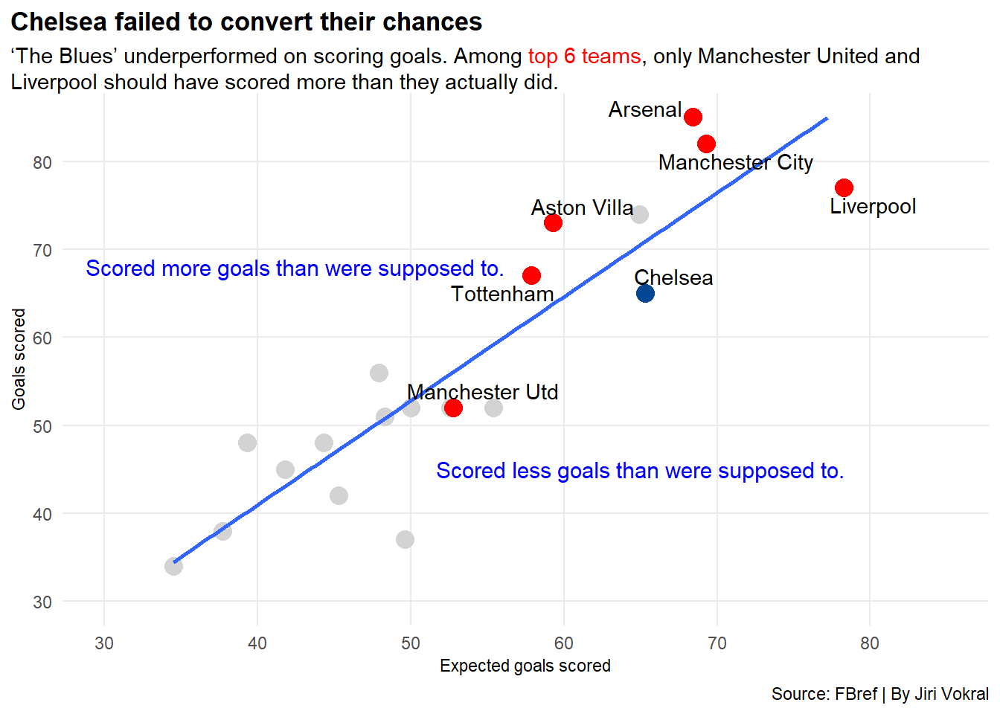
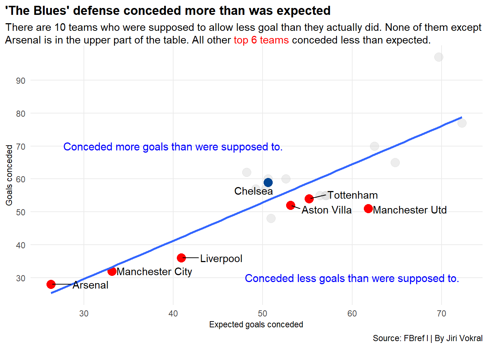

This could be the worst Chelsea season in the Premier League history
Author
Jiri Vokral
Published
May 5, 2024
It was May 29, 2021. The world was still fighting a coronavirus pandemic that affected the football world too. Half-empty stands in Porto, Portugal, watched the final of the world’s most prestigious club football competition, the Champions League.
Two English teams clashed, Chelsea and Manchester City. While Chelsea had already played the final twice in its history and won it once, this was the first opportunity for Manchester City to win the long-desired trophy.
Although the Citizens were considered the favorites, Chelsea won the match and could be considered the best team in the world. They confirmed it twice more - first by beating Europa League winners Sevilla in the UEFA Super Cup and then by dominating the Club World Cup in February 2022 as well.
Just 12 days after winning that trophy for the first time in the club’s history, things began to happen that turned Chelsea’s fortunes completely around.
Russia invaded Ukraine and Europe was left in shock. Within days, countries began to impose sanctions on Russia. That also included the UK. The government decided to seize or restrict access to the assets of many oligarchs who lived or did business in the country. One of them was Roman Abramovich, who was forced to sell his most famous asset he owned for almost 20 years, Chelsea Football Club.
Jump ahead more than two years. Chelsea are drowning in Premier League mediocrity, without a title or even Champions League spot in sight.
Code
library(tidyverse)library(ggalt)library(ggtext)library(ggrepel)library(worldfootballR)library(waffle)library(gt)library(wehoop)prem_ranking_wins <-read.csv("prem_ranking_wins.csv")cfc_ranking <- prem_ranking_wins|>filter(Squad =="Chelsea")ggplot() +geom_line(data=prem_ranking_wins, aes(x=Season_End_Year, y=Rk, group= Squad),color="lightgrey") +geom_line(data=cfc_ranking,aes(x=Season_End_Year, y=Rk),size=.7,color="#034694") +geom_point(data=cfc_ranking,aes(x=Season_End_Year, y=Rk),size=2,color="#034694") +scale_x_continuous(breaks=c(1994,1996,1998,2000,2002,2004,2006,2008,2010,2012,2014,2016,2018,2020,2022,2024), limits =c(1993,2024.5)) +scale_y_reverse(breaks=c(1,2,3,4,5,6,7,8,9,10,11,12,13,14,15,16,17,18,19,20)) +geom_rect(aes(xmin=2022, xmax=2024.5, ymin=1, ymax=20), fill="red", alpha = .2) +geom_text(aes(x=2023.2, y=14.5, label="Todd\n Boehly\n era"), size=4, color ="#034694") +geom_rect(aes(xmin=2003, xmax=2022, ymin=1, ymax=20), fill="#DBA111", alpha = .2) +geom_text(aes(x=2013, y=14.5, label="Roman Abramovich ownership"), size=4, color ="#034694") +theme_minimal()+labs(title="Finishing in top 6 was standard for Chelsea since 96-97 season", subtitle ="Even before Roman Abramovich era, 'The Blues' failed to finish among top teams just four times. Until 95/96 season, there were 22 teams in the Premier League.",y="Position in the table", x ="Ending year of the season", caption="Source: FBref | By Jiri Vokral" ) +theme(plot.title =element_text(size =13, face ="bold"),axis.title =element_text(size =8.5), plot.subtitle =element_textbox_simple(size=11), panel.grid.minor =element_blank(),plot.title.position ="plot" )

A group of ivestors led by Todd Boehly, an American businessman and co-owner of the Los Angeles Dodgers, took over the club officially in May 2022. Chelsea still managed to finish the 21/22 season with dignity and finished third, but then came the downfall.
In the first full season under new management, Chelsea finished 12th. This was the worst finish in their Premier League history, since 93/94 season. The new ownership first got rid of the club’s management and then of coach Tuchel, who won the previously mentioned international trophies with “The Blues”. Two more coaches, Graham Potter and then, club legend Frank Lampard, coached the team in the 22/23 season.
Code
ggplot() +geom_line(data=prem_ranking_wins,aes(x=Season_End_Year, y=win_pct, group= Squad),color="lightgrey") +geom_line(data=cfc_ranking,aes(x=Season_End_Year, y=win_pct),size=.7,color="#034694") +geom_point(data=cfc_ranking,aes(x=Season_End_Year, y=win_pct),size=2,color="#034694") +scale_x_continuous(breaks=c(1994,1996,1998,2000,2002,2004,2006,2008,2010,2012,2014,2016,2018,2020,2022,2024), limits =c(1993,2024.5)) +scale_y_continuous(breaks =c(0,10,20,30,40,50,60,70,80,90)) +geom_rect(aes(xmin=2022, xmax=2024.5, ymin=0, ymax=90), fill="red", alpha = .2) +geom_text(aes(x=2023.2, y=14, label="Todd\n Boehly \n era"), size=4, color ="#034694") +geom_rect(aes(xmin=2003, xmax=2022, ymin=0, ymax=90), fill="#DBA111", alpha = .2) +geom_text(aes(x=2012, y=15, label="Roman Abramovich ownership"), size=4, color ="#034694") +theme_minimal()+labs(title="Under new ownership, 'The Blues' win the least games in their Premier League history", subtitle ="New Chelsea team fails to win at least 50 percent of their games, far less than in the golden years. In their title season, Chelsea won over 70 percent of all games.",y="Win percentage (in %)", x ="Ending year of the season", caption="Source: FBref | By Jiri Vokral" ) +theme(plot.title =element_text(size =12.5, face ="bold"),axis.title =element_text(size =8.5), plot.subtitle =element_textbox_simple(size=11), panel.grid.minor =element_blank(),plot.title.position ="plot" )

Chelsea won only 28.9 percent of their games that year. It was the worst-ever result Chelsea had in the history of the Premier League.
Children usually ask the players after the game for a jersey with signs made. This boy begged the players to fight for their shirt during the Arsenal game, April 22nd, 2024.
At the beginning of the new season, the management decided to hire a new coach, former Tottenham and PSG coach Mauricio Pochettino. Like his predecessors, new ownership supported him with a huge transfer budget.
By the end of the summer of 2023, Boehly had already spent around £1 billion in charge of the club, yb far the most in the world. Striker Romelu Lukaku, World champion Enzo Fernandez and midfielder Moises Caicedo are just some of the few new players who have joined Chelsea. These three in particular cost over £100 million each (Lukaku is no longer even in the club and is playing on a loan in Italy).
New management decided to buy mainly young players. They are so young that Chelsea have the youngest squad in the entire Premier League.
Code
all_standard <-read_csv("all_standard_age.csv")all_standard_age <- all_standard |>mutate(new_age=gsub("\\-\\.*",",",Age)) |>separate(Age, into=c("Years", "Days"), sep="-") |>mutate(pct_year = (as.numeric(Days)/365)) |>mutate(sum_year = (as.numeric(Years)) + pct_year)average_age <- all_standard_age |>group_by(Squad) |>filter(Min_Playing >90) |>summarize(median_age =median(sum_year)) |>mutate(age_difference = median_age-26.49452) |>arrange(median_age)average_age |>gt() |>cols_label(Squad ="Team",median_age ="Median age",age_difference ="Difference from the league-wide median age" ) |>tab_header(title ="Boehly built the youngest squad in the league",subtitle ="Considering only players who played at least 90 minutes this season, Chelsea is the only team with median age under\n24 years. The league-wide median is 26,5 years." ) |>tab_style(style =cell_text(color ="black", weight ="bold", align ="left"),locations =cells_title("title") ) |>tab_style(style =cell_text(color ="black", align ="left"),locations =cells_title("subtitle") ) |>tab_source_note(source_note =md("**By:** Jiri Vokral | **Source:** FBref") ) |>tab_style(locations =cells_column_labels(columns =everything()),style =list(cell_borders(sides ="bottom", weight =px(3)),cell_text(weight ="bold", size=15) ) ) |>opt_row_striping() |>opt_table_lines("none") |>tab_style(style =list(cell_fill(color ="#034694"),cell_text(color ="#DBA111") ),locations =cells_body(rows = Squad =="Chelsea") ) |>fmt_number(columns =c(median_age, age_difference), decimals =1)
Boehly built the youngest squad in the league
Considering only players who played at least 90 minutes this season, Chelsea is the only team with median age under 24 years. The league-wide median is 26,5 years.
Team
Median age
Difference from the league-wide median age
Chelsea
23.3
−3.2
Brighton
24.5
−2.0
Burnley
25.0
−1.4
Arsenal
25.4
−1.1
Sheffield Utd
25.4
−1.1
Wolves
25.5
−1.0
Liverpool
25.5
−1.0
Bournemouth
26.0
−0.5
Tottenham
26.4
−0.1
Crystal Palace
26.6
0.1
Brentford
26.8
0.3
Aston Villa
26.9
0.4
Manchester Utd
26.9
0.4
Nott'ham Forest
27.0
0.5
Newcastle Utd
27.1
0.6
Everton
27.3
0.8
Luton Town
27.4
0.9
Fulham
28.4
1.9
Manchester City
28.4
1.9
West Ham
29.0
2.5
By: Jiri Vokral | Source: FBref
Same as the previous year, Pochettino’s team has been struggling all season, both against the big teams and against those from the bottom of the table. Against the top six teams this season, “The Blues” have only managed to win three games. They won 4-1 at Tottenham, beat Manchester United 4-3 and Tottenham 2-0 again.
In another 4 matches, they had higher expected goals than the opponents and should have won those matches. However, they didn’t.
Code
prem24_result <-read_csv("prem24_result.csv")big6 <-c("Arsenal", "Manchester Utd", "Manchester City", "Tottenham", "Liverpool", "Aston Villa")cfcvbig6<- prem24_result |>filter(Home %in% big6 | Away %in% big6) |>filter(Home =="Chelsea"| Away =="Chelsea") |>mutate(Result =paste(HomeGoals, AwayGoals, sep =":")) |>mutate(xG_HomeAway =paste(Home_xG, Away_xG, sep =" : ")) |>select("Home","Away", "Result", "xG_HomeAway")cfcvbig6 |>gt() |>cols_label(xG_HomeAway ="Expected goals" ) |>tab_header(title ="Chelsea won only three games against top 6 teams this season",subtitle ="'The Blues' drew five times and lost four matches. In games showed in light green in 'Expected goals' column, Chelsea had higher xG than the opponent. In games in light red, 'The Blues' had lower xG than the other team." ) |>tab_style(style =cell_text(color ="black", weight ="bold", align ="left"),locations =cells_title("title") ) |>tab_style(style =cell_text(color ="black", align ="left"),locations =cells_title("subtitle") ) |>tab_source_note(source_note =md("**By:** Jiri Vokral | **Source:** FBref") ) |>tab_style(locations =cells_column_labels(columns =everything()),style =list(cell_borders(sides ="bottom", weight =px(3)),cell_text(weight ="bold", size=15) ) ) |>opt_row_striping() |>opt_table_lines("none") |>tab_style(style =cell_text(color ="black", weight ="bold"),locations =cells_body(columns =c(Result) ) ) |>tab_style(style =list(cell_fill(color ="#F6C324"),cell_text(color ="black") ),locations =cells_body(columns =c(Result),rows = Result =="1:1") ) |>tab_style(style =list(cell_fill(color ="green"),cell_text(color ="black") ),locations =cells_body(columns =c(Result),rows = Result =="1:4") ) |>tab_style(style =list(cell_fill(color ="#F6C324"),cell_text(color ="black") ),locations =cells_body(columns =c(Result),rows = Result =="4:4") ) |>tab_style(style =list(cell_fill(color ="red"),cell_text(color ="black") ),locations =cells_body(columns =c(Result),rows = Result =="2:1") ) |>tab_style(style =list(cell_fill(color ="red"),cell_text(color ="black") ),locations =cells_body(columns =c(Result),rows = Result =="4:1") ) |>tab_style(style =list(cell_fill(color ="green"),cell_text(color ="black") ),locations =cells_body(columns =c(Result),rows = Result =="2:0") ) |>tab_style(style =list(cell_fill(color ="red"),cell_text(color ="black") ),locations =cells_body(columns =c(Result),rows = Result =="5:0") ) |>tab_style(style =list(cell_fill(color ="green"),cell_text(color ="black") ),locations =cells_body(columns =c(Result),rows = Result =="4:3") ) |>tab_style(style =list(cell_fill(color ="#F6C324"),cell_text(color ="black") ),locations =cells_body(columns =c(Result),rows = Result =="2:2") ) |>tab_style(style =list(cell_fill(color ="red"),cell_text(color ="black") ),locations =cells_body(columns =c(Result),rows = Result =="0:1") ) |>tab_style(style =list(cell_fill(color ="lightgreen"),cell_text(color ="black") ),locations =cells_body(columns =c(xG_HomeAway),rows = xG_HomeAway =="1.4 : 1.3") )|>tab_style(style =list(cell_fill(color ="lightgreen"),cell_text(color ="black") ),locations =cells_body(columns =c(xG_HomeAway),rows = xG_HomeAway =="0.9 : 4.1") ) |>tab_style(style =list(cell_fill(color ="#FBE59E"),cell_text(color ="black") ),locations =cells_body(columns =c(xG_HomeAway),rows = xG_HomeAway =="2.9 : 2.9") )|>tab_style(style =list(cell_fill(color ="#FF8488"),cell_text(color ="black") ),locations =cells_body(columns =c(xG_HomeAway),rows = xG_HomeAway =="4.1 : 1.5") ) |>tab_style(style =list(cell_fill(color ="#FF8488"),cell_text(color ="black") ),locations =cells_body(columns =c(xG_HomeAway),rows = xG_HomeAway =="2.9 : 0.6") ) |>tab_style(style =list(cell_fill(color ="#FF8488"),cell_text(color ="black") ),locations =cells_body(columns =c(xG_HomeAway),rows = xG_HomeAway =="2.6 : 1.4") )|>tab_style(style =list(cell_fill(color ="lightgreen"),cell_text(color ="black") ),locations =cells_body(columns =c(xG_HomeAway),rows = xG_HomeAway =="1.3 : 1") ) |>tab_style(style =list(cell_fill(color ="#FF8488"),cell_text(color ="black") ),locations =cells_body(columns =c(xG_HomeAway),rows = xG_HomeAway =="3.3 : 1.6") ) |>tab_style(style =list(cell_fill(color ="lightgreen"),cell_text(color ="black") ),locations =cells_body(columns =c(xG_HomeAway),rows = xG_HomeAway =="3 : 1.5") ) |>tab_style(style =list(cell_fill(color ="lightgreen"),cell_text(color ="black") ),locations =cells_body(columns =c(xG_HomeAway),rows = xG_HomeAway =="1.1 : 1.6") ) |>tab_style(style =list(cell_fill(color ="lightgreen"),cell_text(color ="black") ),locations =cells_body(columns =c(xG_HomeAway),rows = Result =="2:0") )
Chelsea won only three games against top 6 teams this season
'The Blues' drew five times and lost four matches. In games showed in light green in 'Expected goals' column, Chelsea had higher xG than the opponent. In games in light red, 'The Blues' had lower xG than the other team.
Home
Away
Result
Expected goals
Chelsea
Liverpool
1:1
1.4 : 1.3
Tottenham
Chelsea
1:4
0.9 : 4.1
Chelsea
Manchester City
4:4
2.9 : 2.9
Manchester Utd
Chelsea
2:1
4.1 : 1.5
Liverpool
Chelsea
4:1
2.9 : 0.6
Manchester City
Chelsea
1:1
2.6 : 1.4
Chelsea
Tottenham
2:0
1.4 : 0
Arsenal
Chelsea
5:0
3.3 : 1.6
Chelsea
Manchester Utd
4:3
3 : 1.5
Aston Villa
Chelsea
2:2
1.1 : 1.6
Chelsea
Aston Villa
0:1
1.3 : 1
Chelsea
Arsenal
2:2
1.3 : 1
By: Jiri Vokral | Source: FBref
But Chelsea couldn’t win even against the worst-ever sides in the Premier League too. For example, dead-last Sheffield United have a single point in their last five games. And that was for a 2-2 draw against Chelsea. Given the expected goals, Sheffield should have even won the game. Or the game at Luton, who are playing in the Premier League for the first time ever, which Chelsea won, but statistically should have lost.
Code
bottom6 <-c("Sheffield Utd", "Burnley", "Luton Town", "Nott'ham Forest", "Brentford", "Everton")cfcvbottom6 <- prem24_result |>filter(Home =="Chelsea"| Away =="Chelsea") |>filter(Home %in% bottom6 | Away %in% bottom6) |>filter(Home !="Nott'ham Forest") |>mutate(Result =paste(HomeGoals, AwayGoals, sep =":")) |>mutate(xG_HomeAway =paste(Home_xG, Away_xG, sep =" : ")) |>select("Home","Away", "Result", "xG_HomeAway")cfcvbottom6 |>gt()|>cols_label(xG_HomeAway ="Expected goals" ) |>tab_header(title ="Pochettino's team dropped points six times playing the worst teams in the league",subtitle ="Chelsea won the games in green, drew those in yellow and lost the ones in red. The same color rules apply to expected goals. They couldn't win in more than half of the occasions playing the bottom six teams in the table. 'The Blues' are yet to play Nottingham Forrest again on May 11." ) |>tab_style(style =cell_text(color ="black", weight ="bold", align ="left"),locations =cells_title("title") ) |>tab_style(style =cell_text(color ="black", align ="left"),locations =cells_title("subtitle") ) |>tab_source_note(source_note =md("**By:** Jiri Vokral | **Source:** FBref") ) |>tab_style(locations =cells_column_labels(columns =everything()),style =list(cell_borders(sides ="bottom", weight =px(3)),cell_text(weight ="bold", size=15) ) ) |>opt_row_striping() |>opt_table_lines("none") |>tab_style(style =cell_text(color ="black", weight ="bold"),locations =cells_body(columns =c(Result) ) ) |>opt_row_striping() |>opt_table_lines("none") |>tab_style(style =cell_text(color ="black", weight ="bold"),locations =cells_body(columns =c(Result) ) ) |>tab_style(style =list(cell_fill(color ="red"),cell_text(color ="black") ),locations =cells_body(columns =c(Result),rows = Result =="0:2"& Home =="Chelsea") ) |>tab_style(style =list(cell_fill(color ="red"),cell_text(color ="black") ),locations =cells_body(columns =c(Result),rows = Result =="2:0"& Home =="Everton") ) |>tab_style(style =list(cell_fill(color ="green"),cell_text(color ="black") ),locations =cells_body(columns =c(Result),rows = Home =="Chelsea"& Result =="2:0") ) |>tab_style(style =list(cell_fill(color ="green"),cell_text(color ="black") ),locations =cells_body(columns =c(Result),rows = Result =="2:3") ) |>tab_style(style =list(cell_fill(color ="#F6C324"),cell_text(color ="black") ),locations =cells_body(columns =c(Result),rows = Result =="2:2") ) |>tab_style(style =list(cell_fill(color ="green"),cell_text(color ="black") ),locations =cells_body(columns =c(Result),rows = Result =="3:0") ) |>tab_style(style =list(cell_fill(color ="green"),cell_text(color ="black") ),locations =cells_body(columns =c(Result),rows = Result =="6:0") ) |>tab_style(style =list(cell_fill(color ="red"),cell_text(color ="black") ),locations =cells_body(columns =c(Result),rows = Result =="0:1") ) |>tab_style(style =list(cell_fill(color ="green"),cell_text(color ="black") ),locations =cells_body(columns =c(Result),rows = Result =="1:4") ) |>tab_style(style =list(cell_fill(color ="#FF8488"),cell_text(color ="black") ),locations =cells_body(columns =c(xG_HomeAway),rows = xG_HomeAway =="1.9 : 2.2") ) |>tab_style(style =list(cell_fill(color ="#FF8488"),cell_text(color ="black") ),locations =cells_body(columns =c(xG_HomeAway),rows = xG_HomeAway =="1.2 : 0.9") ) |>tab_style(style =list(cell_fill(color ="lightgreen"),cell_text(color ="black") ),locations =cells_body(columns =c(xG_HomeAway),rows = xG_HomeAway =="3.1 : 0.4") ) |>tab_style(style =list(cell_fill(color ="#FF8488"),cell_text(color ="black") ),locations =cells_body(columns =c(xG_HomeAway),rows = xG_HomeAway =="2.3 : 1.5") ) |>tab_style(style =list(cell_fill(color ="#FBE59E"),cell_text(color ="black") ),locations =cells_body(columns =c(xG_HomeAway),rows = xG_HomeAway =="1.8 : 1.8") ) |>tab_style(style =list(cell_fill(color ="lightgreen"),cell_text(color ="black") ),locations =cells_body(columns =c(xG_HomeAway),rows = xG_HomeAway =="2.2 : 0.4") ) |>tab_style(style =list(cell_fill(color ="lightgreen"),cell_text(color ="black") ),locations =cells_body(columns =c(xG_HomeAway),rows = xG_HomeAway =="4.2 : 1.6") ) |>tab_style(style =list(cell_fill(color ="#FF8488"),cell_text(color ="black") ),locations =cells_body(columns =c(xG_HomeAway),rows = xG_HomeAway =="1.4 : 0.3") ) |>tab_style(style =list(cell_fill(color ="lightgreen"),cell_text(color ="black") ),locations =cells_body(columns =c(xG_HomeAway),rows = xG_HomeAway =="3.1 : 1.5") ) |>tab_style(style =list(cell_fill(color ="lightgreen"),cell_text(color ="black") ),locations =cells_body(columns =c(xG_HomeAway),rows = xG_HomeAway =="2.3 : 0.8") )|>tab_style(style =list(cell_fill(color ="lightgreen"),cell_text(color ="black") ),locations =cells_body(columns =c(xG_HomeAway),rows = xG_HomeAway =="0.7 : 1.9") )
Pochettino's team dropped points six times playing the worst teams in the league
Chelsea won the games in green, drew those in yellow and lost the ones in red. The same color rules apply to expected goals. They couldn't win in more than half of the occasions playing the bottom six teams in the table. 'The Blues' are yet to play Nottingham Forrest again on May 11.
Home
Away
Result
Expected goals
Chelsea
Brentford
0:2
1.9 : 2.2
Everton
Chelsea
2:0
1.2 : 0.9
Chelsea
Sheffield Utd
2:0
3.1 : 0.4
Luton Town
Chelsea
2:3
2.3 : 1.5
Brentford
Chelsea
2:2
1.8 : 1.8
Chelsea
Luton Town
3:0
2.2 : 0.4
Chelsea
Burnley
2:2
4.2 : 1.6
Sheffield Utd
Chelsea
2:2
1.4 : 0.3
Chelsea
Everton
6:0
3.1 : 1.5
Chelsea
Nott'ham Forest
0:1
2.3 : 0.8
Burnley
Chelsea
1:4
0.7 : 1.9
By: Jiri Vokral | Source: FBref
Chelsea are struggling to convert chances to some extent. They have scored 65 goals, more than Manchester United, for example. Chelsea players were expected to score more than Tottenham and Aston Villa, who are fighting for the crucial fourth position that secures a place in next year’s Champions League season.
Code
prem24 <- prem_ranking_wins |>filter( Season_End_Year ==2024 )top6<- prem24|>filter(Rk <7)chelsea24 <- prem24 |>filter( Squad =="Chelsea" )ggplot() +geom_point(data=prem24, aes(x=xG, y=GF), color="lightgrey", size=4) +geom_point(data=chelsea24, aes(x=xG, y=GF), color="#034694", size=4) +geom_point(data=top6, aes(x=xG, y=GF), color="red", size=4)+geom_smooth(data=prem24, aes(x=xG, y=GF), method="lm", se=FALSE) +geom_text(aes(x=42.5, y=68, label="Scored more goals than were supposed to."), size=4, color ="blue") +geom_text(aes(x=65, y=45, label="Scored less goals than were supposed to."), size=4, color ="blue") +geom_text_repel(data=chelsea24, aes(x=xG, y=GF, label=Squad), ) +geom_text_repel(data=top6, aes(x=xG, y=GF, label=Squad)) +scale_x_continuous(limits =c(30,85)) +scale_y_continuous(limits =c(30,85)) +theme_minimal() +labs(title="Chelsea failed to convert their chances", subtitle ="'The Blues' underperformed on scoring goals. Among <span style = 'color:red;'>top 6 teams</span>, only Manchester United and Liverpool should have scored more than they actually did.",y="Goals scored", x ="Expected goals scored", caption="Source: FBref | By Jiri Vokral") +theme(plot.title =element_text(size =13, face ="bold"),axis.title =element_text(size =8.5), plot.subtitle =element_textbox_simple(size=11), panel.grid.minor =element_blank(),plot.title.position ="plot" )

Pochettino’s team is much worse defensively. Only 7 teams have conceded more goals this season. Apart from West Ham, all of them are struggling to stay in the league for the next season or at least are among the worst teams in the whole league. Chelsea should have conceded about 8 goals less.
Code
ggplot() +geom_point(data=prem24, aes(x=xGA, y=GA), color="lightgrey", alpha=.4, size=4) +geom_point(data=chelsea24, aes(x=xGA, y=GA), color="#034694", size=4) +geom_point(data=top6, aes(x=xGA, y=GA), color="red", size=4)+geom_smooth(data=prem24, aes(x=xGA, y=GA), method="lm", se=FALSE) +geom_text(aes(x=40, y=70, label="Conceded more goals than were supposed to."), size=4, color ="blue") +geom_text(aes(x=60, y=30, label="Conceded less goals than were supposed to."), size=4, color ="blue") +geom_text_repel(data=chelsea24, aes(x=xGA, y=GA, label=Squad), ) +geom_text_repel(data=top6, aes(x=xGA, y=GA, label=Squad), nudge_x =4.5) +scale_x_continuous(breaks =c(10,20,30,40,50,60,70,80,90)) +scale_y_continuous(breaks =c(10,20,30,40,50,60,70,80,90)) +theme_minimal() +labs(title="'The Blues' defense conceded more than was expected", subtitle ="There are 10 teams who were supposed to allow less goal than they actually did. None of them except Arsenal is in the upper part of the table. All other <span style = 'color:red;'>top 6 teams</span> conceded less than expected.",y="Goals conceded", x ="Expected goals conceded", caption="Source: FBref l | By Jiri Vokral") +theme(plot.title =element_text(size =13, face ="bold"),axis.title =element_text(size =8.5), plot.subtitle =element_textbox_simple(size=11), panel.grid.minor =element_blank(),plot.title.position ="plot" )

Conceding that many goals was not at all typical for Chelsea. “The Blues” still hold the record for the fewest goals conceded in a Premier League season. In the 04/05 title season, Mourinho’s then-team allowed a hard-to-believe 15 goals in 38 games.
Pochettino’s team, meanwhile, is at 59 goals and it’s not even the end of the season. Chelsea have 4 more games to record the worst season defensively of the so-called “Big 6” (which contains Manchester United and City, Liverpool, Arsenal, Tottenham, and Chelsea), considered to be the best clubs in the league.
Code
cfc_goals_allowed <- prem_ranking_wins |>filter(Squad=="Chelsea")big6 <-c("Arsenal", "Tottenham", "Manchester Utd", "Manchester City", "Liverpool")big6_goals_allowed <- prem_ranking_wins |>filter(Squad %in% big6)ggplot() +geom_line(data=big6_goals_allowed, aes(x=Season_End_Year, y=GA, group= Squad), color="lightgrey") +geom_line(data=cfc_goals_allowed, aes(x=Season_End_Year, y=GA),linewidth=.7, color="#034694") +geom_point(data=cfc_goals_allowed, aes(x=Season_End_Year, y=GA),size=2, color="#034694") +geom_text(aes(x=2007.3, y=15, label="04/05 season"), size=3, color ="#034694") +scale_x_continuous(breaks=c(1994,1996,1998,2000,2002,2004,2006,2008,2010,2012,2014,2016,2018,2020,2022,2024), limits =c(1993,2024.5)) +scale_y_reverse(breaks=c(0,10,20,30,40,50,60))+theme_minimal() +labs(title="Pochettino built the worst defense in Chelsea's Premier League history", subtitle ="Chelsea already conceded 59 goals this season. If they concede 8 more in last 4 games, it will be the worst result among 'Big 6' teams in Premier League history.", y="Goals conceded", x ="Ending year of the season", caption="Source: FBref | By Jiri Vokral" ) +theme(plot.title =element_text(size =13, face ="bold"),axis.title =element_text(size =8.5), plot.subtitle =element_textbox_simple(size=11), panel.grid.minor =element_blank(),plot.title.position ="plot" )
How is it possible that Chelsea are not doing that badly? Cole Palmer exists.
On the last day of the summer 2023 transfer window, Chelsea decided to buy the then-not-so-famous youngster from Manchester City. In doing so, they probably saved their season a little bit.
Code
cfc_standard <-read_csv("cfc_standard.csv")cfc_goalscorers <- cfc_standard |>filter(`G+A`>1) |>select("Player", "Gls", "Ast") |>mutate(NewGls_Data ="Gls") |>mutate(NewAst_Data ="Ast")palmer <- cfc_standard |>filter(Player =="Cole Palmer")palmer_long <-pivot_longer(palmer, cols =c(Gls, Ast), names_to ="Type", values_to ="Value")cfc_goalscorers_long <-pivot_longer(cfc_goalscorers, cols =c(Gls, Ast), names_to ="Type", values_to ="Value")ggplot() +geom_bar(data=cfc_goalscorers_long, aes(x=reorder(Player, Value), weight=Value, fill=Type)) +geom_bar(data=palmer_long, aes(x=reorder(Player, Value), weight=Value, fill=Type),color="#EE242C") +scale_fill_manual(values =c("#DBA111","#034694"), labels =c("Assists", "Goals"), name="Type contribution")+coord_flip() +theme_minimal() +labs(title="Build Cole Palmer a statue", subtitle ="Young Englishman scored 20 goals this season and added 9 assists. That is the most in both stats in the club.",y="Goal contributions", x ="", caption="Source: FBref | By Jiri Vokral" ) +theme(plot.title =element_text(size =14, face ="bold"),axis.title =element_text(size =8.5), plot.subtitle =element_textbox_simple(size=11), panel.grid.minor =element_blank(),plot.title.position ="plot" )
Before the April game against Arsenal, Palmer got sick and was unable to play.
Cole Palmer is key player for Pochettino’s team.
“It is a good challenge if Palmer is not available tomorrow. It’s a good challenge for his teammates or those in a similar position,” Pochettino said before the game.
“If I were them, I would be motivated to go there tomorrow and show that this is Chelsea Football Club, not Cole Palmer Football Club,” he added.
Chelsea lost 5-0, the worst defeat by a city rival in Premier League history.
Code
cfc_goals <-c("Goals without Palmer contribution"=36, "Palmer's goals and assists"=29)waffle( cfc_goals, rows =5, colors =c("#034694", "#DBA111", "white")) +labs(x ="1 square = 1 goal",title="Palmer contributes to half of Chelsea goals", subtitle="Without Palmer's contribution, Chelsea scored only 34 goals. He contributed to 44,6 % of all goals.",caption="Source: FBref | By Jiri Vokral") +theme(plot.title =element_text(size =16, face ="bold"),axis.title =element_text(size =10),axis.title.y =element_blank() )
If we took away all these contributions, Chelsea might be in the relegation zone.
However, it should be noted that this statistic can be misleading. Palmer converted 11 penalty kicks, which Chelsea would probably have had as well. Moreover, someone else would have been on the pitch instead of him, so this statistic cannot be taken 100% seriously. But it still says a lot about the dependence of Pochettino’s team on one player.
Chelsea without Cole Palmer according to Sky Bet, April 22, 2024.
So it’s not to say that this year’s team is clearly the worst. For example, last year’s team had an even lower win percentage and scored fewer goals. The teams from the beginning of the 90’s and 2016 teams won only 3 out of 10 games. This year’s team, on the other hand, has a much worse defensive record and so far won 4 out of 10 games on average.
Pochettino and Boehly can thank Palmer in particular for not being worse off… They are still among the worst though.
Note: Data were collected before the start of Gameweek 36.